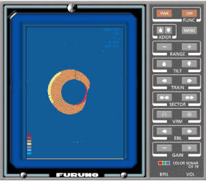

Sensores de Pesca
Para el control de las artes de pesca el simulador incorpora los sensores habituales, la sonda, la sonda de red y el sonar. Estos sensores pueden ser equipos reales conectados al simulador o equipos simulados por software accesibles desde el menú de la conning display.
Sonda de Pesca |
Sonda de Red |
La aplicación software que simula ambas sondas (de pesca y de red) se describe detalladamente en el documento: Simulador de Sonda - Manual del Operador.
Sonar

La aplicación software que simula el sonar se describe detalladamente en el documento: Simulador de Sonar - Manual del Operador.